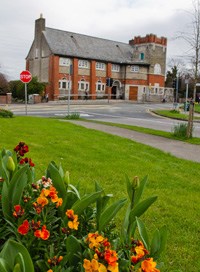

Clondalkin Library
Clondalkin Library, open since 1911, is a two-storey Carnegie building in Clondalkin Village. Designed by T. J. Byrne, it is the oldest library in South Dublin County Council’s library network. The building, although refurbished, retains many of its original architectural features.
The adult library is downstairs with the children’s and young adult libraries upstairs.
Downstairs is fully wheelchair accessible with a ramp to the front door. The toilet is also wheelchair accessible. There are two disabled parking spaces opposite the library. There is no lift. Upstairs is accessed by stairs.
Downstairs there is a cosy reading area with armchairs and a power supply. Upstairs there are study tables with a power supply.
The Red Line LUAS Red Cow stop is approximately a ten minute walk from Clondalkin library. From the LUAS stop walk over the blue bridge and towards the village.
Downstairs there is a cosy reading area with armchairs and a power supply. Upstairs there are study tables with a power supply.
The Red Line LUAS Red Cow stop is approximately a ten minute walk from Clondalkin library. From the LUAS stop walk over the blue bridge and towards the village.

| Opening Hours | |
|---|---|
| MON | 09:00 - 17:00 |
| TUE | 09:00 - 17:00 |
| WED | 09:00 - 17:00 |
| THU | 09:00 - 17:00 |
| FRI | 09:00 - 17:00 |
| SAT | 10:00 - 16:00 |
| SUN | 10:00 - 16:00 |